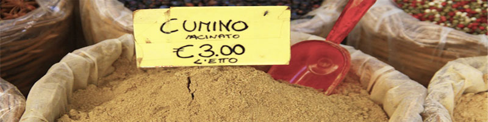

Description
Cumin is the dried seed of the herb Cuminum cyminum, a member of the parsley family.
Culinary and other Uses
Cumin seed is used as a spice for its distinctive flavour and aroma.Cumin can be found in some cheeses, such as Leyden cheese, and in some traditional breads from France. Cumin can be an ingredient in chili powder (often Tex-Mex or Mexican-style) and is found in achiote blends, adobos, sofrito, garam masala, curry powder, and bahaarat. In South Asian cooking it is often combined with coriander seeds in a powdered mixture called dhana jeera.
Cumin can be used ground or as whole seeds.It imparts an earthy, warming and aromatic character to food, making it a staple in certain stews and soups, as well as spiced gravies such as curry and chili. It is also used as an ingredient in some pickles and pastries.
Medicinal Uses
In a 100-g reference amount, cumin seeds provide high amounts of the Daily Value for fat (especially monounsaturated fat), protein, and dietary fiber. B vitamins, vitamin E, and several dietary minerals, especially iron, magnesium, and manganese, are present in substantial Daily Value amounts. Cumin seeds contain petroselinic acid.
Cultivation and Harvest
The main producers of cumin are China and India, which produces 70% of the world supply and consumes 90% of that (which means that South Asia consumes 63% of the world's cumin). Mexico is another major producer. In total, around 300,000 tons of cumin per year are produced worldwide.